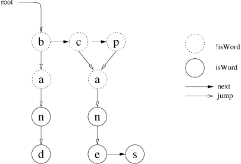

| Home · All Classes · Annotated · Functions |
The QDawg class provides an implementation of a Directed Acyclic Word Graph. More...
#include <QDawg>
The QDawg class provides an implementation of a Directed Acyclic Word Graph.
A DAWG provides very fast look-up of words in a word list. The following functionality is provided:
A global DAWG is maintained for the current locale. See the Qtopia class for details.
The structure of a DAWG is a graph of Nodes. There are no cycles in the graph as there are no inifinitely repeating words. Each Node is a member of a list of Nodes called a child list. Each Node in the child list has a letter, an isWord flag, at most one jump arc, and at most one arc to the next child in the list.
If the Nodes is traversed in a DAWG, starting from the root(), and all the letters from the single child are concatenated in each child list visited, then at every Node which has the isWord flag set the concatenation will be a word in the list represented by the DAWG.
For example, the DAWG below represents the word list: ban, band, can, cane, cans, pan, pane, pans.
This structuring not only provides O(1) lookup of words in the word list, but also produces a smaller storage file than a plain text file word list.

Constructs a new empty DAWG.
Deletes the DAWG.
Returns a list of all the words in the DAWG.
Returns true if the DAWG contains the word s; otherwise returns false.
Returns the number of words in the DAWG.
Replaces all the DAWG's words with the words in the list.
This is an overloaded member function, provided for convenience.
Replaces all the DAWG's words with words read from dev.
Replaces the DAWG with the DAWG in dev. The file is memory-mapped.
See also write().
Replaces the DAWG with the DAWG in filename. The file is memory-mapped.
See also write().
Returns the root Node of the DAWG.
Writes the DAWG to dev, in a custom QDAWG format.
Warning: QDawg memory maps DAWG files. The safe method for writing to DAWG files is to write the data to a new file and move the new file to the old file name. QDawgs using the old file will continue using that file.
| Copyright © 2007 Trolltech | Trademarks | Qtopia 4.2.2 |